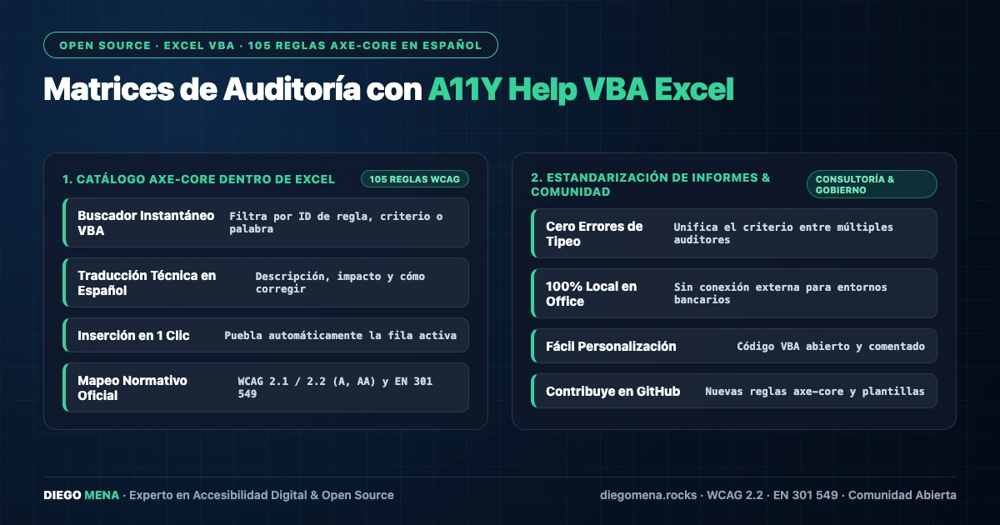

A11Y Help VBA Excel: las 105 reglas de axe-core dentro de Excel
Complemento VBA para Microsoft Excel que permite consultar e insertar en español las 105 reglas de accesibilidad de axe-core dentro de matrices de auditoría y gestión de hallazgos.

En la práctica real de la auditoría, Excel sigue siendo la herramienta de trabajo: matrices de hallazgos, trazabilidad de criterios y evidencias viven en hojas de cálculo. A11Y Help VBA Excel lleva la referencia normativa al lugar donde ya se trabaja, en lugar de obligar a saltar entre la documentación y la matriz.
105 reglas de axe-core en español
El complemento incorpora el catálogo completo de las 105 reglas de axe-core traducidas al español: identificador de regla, criterios WCAG asociados, nivel, impacto y descripción de la falla. Cada regla puede consultarse con un buscador incremental e insertarse directamente en la celda activa.
Buscador integrado en la matriz
El flujo es simple: el auditor redacta un hallazgo, abre el panel del complemento, filtra por criterio o texto libre y pulsa insertar. La regla correspondiente se escribe con su formato normalizado, eliminando los errores de transcripción que eran habituales al copiar descripciones desde la web o desde reportes de axe.
Sub InsertarReglaAxe(reglaId As String)
Dim regla As A11yRule
Set regla = CatalogoAxe.Buscar(reglaId) ' 105 reglas ES
If Not regla Is Nothing Then
ActiveCell.Value = regla.DescripcionES
End If
End SubPor qué VBA y no una app externa
Porque el objetivo era cero fricción: sin instalaciones con permisos de administrador, sin servicios externos y sin dependencias de red. Un archivo .bas se importa en cualquier Excel corporativo y funciona incluso en los entornos restringidos típicos de banca y gobierno donde operan muchas auditorías.
Complemento del ecosistema
Junto a Test Cases A11Y (casos de prueba Gherkin) y Pa11y Batch (automatización masiva), este complemento cubre la tercera pata del flujo: la documentación formal de hallazgos en la herramienta que los equipos de QA realmente usan.
El proyecto es open source en github.com/ingelectronicadj/a11y-help-VBAexcel.